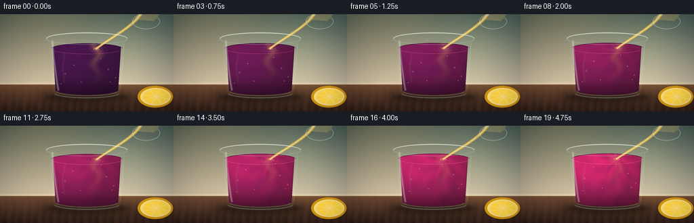
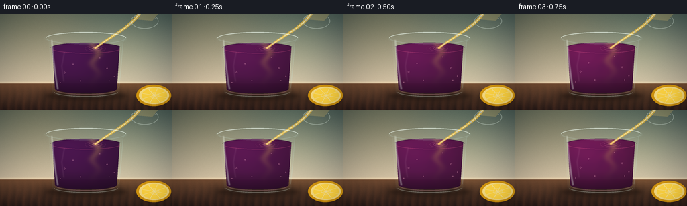
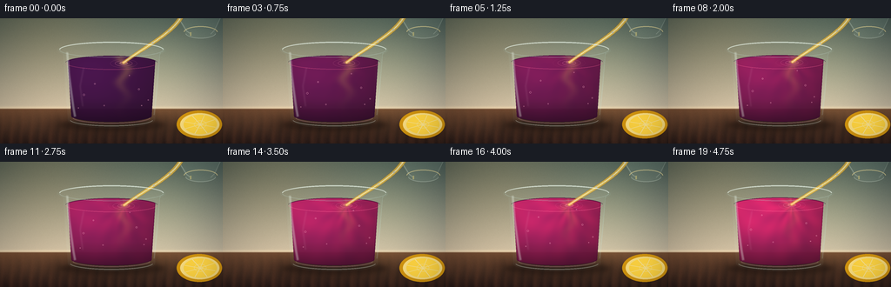
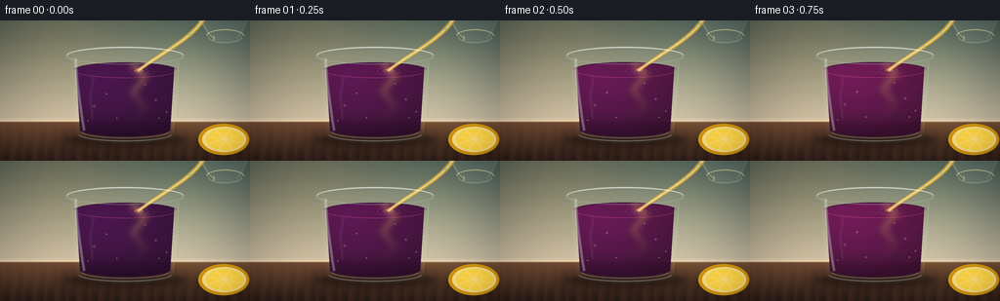

CODING AGENTS AS PIXEL WORLD MODELS
traex/DeepSeek-V4.1-Flash · phygen_149
点击播放 · 原生 RGB 像素
逐轮保存的候选
回放视频、检查图与代码变化。
每份候选均可单独播放。实际图片检查记录在下方工具轨迹中。
候选 01播放与检查图
点击播放 · 原生 RGB 像素


展开代码变化
--- 上一保存版本
+++ 本次保存版本
@@ -0,0 +1,574 @@
+from pathlib import Path
+
+import numpy as np
+from PIL import Image, ImageDraw, ImageFilter
+
+import artifact_io
+
+
+W, H = 256, 144
+N, FPS = 20, 4
+S = 4
+HW, HH = W * S, H * S
+CASE_DIR = Path(__file__).resolve().parent
+
+
+def px(value):
+ return int(round(value * S))
+
+
+def color(values):
+ return np.asarray(values, dtype=np.float32)
+
+
+def blank_mask():
+ return Image.new("L", (HW, HH), 0)
+
+
+def mask_array(draw_fn):
+ image = blank_mask()
+ draw_fn(ImageDraw.Draw(image))
+ return np.asarray(image, dtype=np.float32) / 255.0
+
+
+def composite(image, overlay, alpha):
+ a = np.clip(alpha, 0.0, 1.0)[..., None]
+ if isinstance(overlay, tuple):
+ overlay = color(overlay)
+ return image * (1.0 - a) + overlay * a
+
+
+def blurred_mask(mask, radius):
+ image = Image.fromarray(np.uint8(np.clip(mask, 0.0, 1.0) * 255.0))
+ image = image.filter(ImageFilter.GaussianBlur(radius * S))
+ return np.asarray(image, dtype=np.float32) / 255.0
+
+
+def rounded_ellipse_mask(box, fill=255, outline=None, width=1):
+ def draw(drawer):
+ scaled = tuple(px(v) for v in box)
+ drawer.ellipse(
+ scaled,
+ fill=fill,
+ outline=outline,
+ width=max(1, px(width)),
+ )
+
+ return mask_array(draw)
+
+
+def make_background():
+ y, x = np.mgrid[0:HH, 0:HW].astype(np.float32)
+ xn = x / HW
+ yn = y / HH
+
+ wall_top = color((72, 94, 90))
+ wall_bottom = color((205, 195, 171))
+ wall_mix = np.clip(yn / 0.76, 0.0, 1.0)[..., None] ** 1.25
+ wall = wall_top * (1.0 - wall_mix) + wall_bottom * wall_mix
+
+ warm_pool = np.exp(
+ -(((x - 56 * S) / (100 * S)) ** 2 + ((y - 12 * S) / (92 * S)) ** 2)
+ )
+ wall += warm_pool[..., None] * color((35, 20, 4))
+
+ table_top = color((112, 76, 51))
+ table_bottom = color((45, 29, 25))
+ table_mix = np.clip((yn - 0.72) / 0.28, 0.0, 1.0)[..., None]
+ table = table_top * (1.0 - table_mix) + table_bottom * table_mix
+
+ grain = (
+ np.sin(xn * 142.0 + 0.8 * np.sin(yn * 21.0))
+ + 0.45 * np.sin(xn * 71.0 - yn * 9.0)
+ + 0.25 * np.sin(xn * 287.0 + yn * 13.0)
+ )
+ grain = grain[..., None] * color((8, 4, 2))
+ table = table + grain * np.clip((yn - 0.70) / 0.30, 0.0, 1.0)[..., None]
+
+ horizon = np.exp(-((y - 103.2 * S) / (2.0 * S)) ** 2)
+ wall = wall + horizon[..., None] * color((25, 20, 12))
+
+ table_mask = np.clip((yn - 0.716) * 95.0, 0.0, 1.0)[..., None]
+ image = wall * (1.0 - table_mask) + table * table_mask
+
+ # Soft, out-of-focus light patches give the wall depth without competing
+ # with the glass and the color reaction.
+ light_patch = np.exp(
+ -(((x - 194 * S) / (55 * S)) ** 2 + ((y - 50 * S) / (62 * S)) ** 2)
+ )
+ image += light_patch[..., None] * color((18, 17, 8))
+
+ rng = np.random.default_rng(17)
+ fine_noise = rng.normal(0.0, 2.2, (HH, HW, 1)).astype(np.float32)
+ image += fine_noise
+ return image
+
+
+def make_masks(surface_y):
+ outer = mask_array(
+ lambda d: (
+ d.ellipse(tuple(px(v) for v in (66, 26, 190, 47)), fill=255),
+ d.polygon(
+ [tuple(px(v) for v in p) for p in ((72, 37), (184, 37), (178, 118), (78, 118))],
+ fill=255,
+ ),
+ d.ellipse(tuple(px(v) for v in (78, 108, 178, 126)), fill=255),
+ )
+ )
+ inner = mask_array(
+ lambda d: (
+ d.ellipse(tuple(px(v) for v in (72, 31, 184, 44)), fill=255),
+ d.polygon(
+ [tuple(px(v) for v in p) for p in ((77, 37), (179, 37), (174, 114), (82, 114))],
+ fill=255,
+ ),
+ d.ellipse(tuple(px(v) for v in (82, 107, 174, 121)), fill=255),
+ )
+ )
+
+ surface_box = (75, surface_y - 8, 181, surface_y + 8)
+ liquid = mask_array(
+ lambda d: (
+ d.ellipse(tuple(px(v) for v in surface_box), fill=255),
+ d.polygon(
+ [
+ tuple(px(v) for v in p)
+ for p in (
+ (77, surface_y),
+ (179, surface_y),
+ (175, 112),
+ (81, 112),
+ )
+ ],
+ fill=255,
+ ),
+ d.ellipse(tuple(px(v) for v in (81, 104, 175, 119)), fill=255),
+ )
+ )
+ liquid *= inner
+ return outer, inner, liquid, surface_box
+
+
+def draw_shadow(image):
+ shadow = rounded_ellipse_mask((54, 111, 201, 136), fill=220)
+ shadow = blurred_mask(shadow, 7.0) * 0.43
+ image = composite(image, (13, 8, 8), shadow)
+
+ contact = rounded_ellipse_mask((68, 116, 190, 129), fill=220)
+ contact = blurred_mask(contact, 2.2) * 0.36
+ return composite(image, (12, 8, 7), contact)
+
+
+def draw_lemon(image, t):
+ # A partially cropped lemon half anchors the cause of the color change.
+ shadow = rounded_ellipse_mask((199, 116, 258, 140), fill=210)
+ shadow = blurred_mask(shadow, 4.0) * 0.34
+ image = composite(image, (30, 17, 12), shadow)
+
+ rind = mask_array(
+ lambda d: d.ellipse(tuple(px(v) for v in (203, 106, 255, 138)), fill=255)
+ )
+ image = composite(image, (196, 132, 15), rind * 0.98)
+
+ pith = mask_array(
+ lambda d: d.ellipse(tuple(px(v) for v in (207, 109, 252, 135)), fill=255)
+ )
+ image = composite(image, (255, 232, 137), pith * 0.98)
+
+ flesh = mask_array(
+ lambda d: d.ellipse(tuple(px(v) for v in (211, 111, 249, 133)), fill=255)
+ )
+ y, x = np.mgrid[0:HH, 0:HW].astype(np.float32)
+ flesh_color = color((247, 207, 52)) + (
+ 20.0
+ * np.clip(1.0 - ((x / S - 230) ** 2 + (y / S - 122) ** 2) / 900.0, 0, 1)
+ )[..., None]
+ image = composite(image, flesh_color, flesh * 0.98)
+
+ segments = Image.new("RGBA", (HW, HH), (0, 0, 0, 0))
+ d = ImageDraw.Draw(segments)
+ cx, cy = px(230), px(122)
+ for angle in np.linspace(-165, 155, 8):
+ theta = np.deg2rad(angle)
+ tip = (cx + px(18.5) * np.cos(theta), cy + px(11.2) * np.sin(theta))
+ d.line((cx, cy, *tip), fill=(255, 243, 180, 205), width=px(0.75))
+ for radius in (px(3.0), px(7.0)):
+ d.ellipse((cx - radius, cy - radius * 0.62, cx + radius, cy + radius * 0.62),
+ outline=(255, 242, 177, 180), width=px(0.6))
+ segment_arr = np.asarray(segments, dtype=np.float32) / 255.0
+ image = image * (1.0 - segment_arr[..., 3:4] * flesh[..., None])
+ image += segment_arr[..., :3] * 255.0 * segment_arr[..., 3:4] * flesh[..., None]
+
+ rim_glow = np.clip(rind - pith, 0.0, 1.0)
+ image += rim_glow[..., None] * color((20, 24, 0))
+ return image
+
+
+def liquid_color(t):
+ y, x = np.mgrid[0:HH, 0:HW].astype(np.float32)
+ x = x / S
+ y = y / S
+
+ surface_y = 51.0 - 2.0 * t
+ entry_x = 142.0 + 0.7 * np.sin(t * 3.4)
+ entry_y = surface_y + 1.2
+ dx = (x - entry_x) / 52.0
+ dy = (y - entry_y) / 61.0
+ radius = np.sqrt(dx * dx + dy * dy) + 1e-5
+ angle = np.arctan2(dy, dx)
+
+ swirl = (
+ np.sin(7.0 * angle - 8.0 * radius + 2.7 * t)
+ + 0.48 * np.sin(13.0 * angle + 5.0 * radius - 1.8 * t)
+ )
+ depth_boost = np.clip(1.0 - (y - surface_y) / 68.0, 0.0, 1.0)
+ mix = 0.018 + 0.86 * (t ** 0.72) * (0.74 + 0.26 * depth_boost)
+ mix += 0.09 * swirl * np.exp(-0.7 * radius) * t
+ mix = np.clip(mix, 0.0, 0.985)
+
+ plum = color((59, 12, 67))
+ rose = color((220, 34, 105))
+ base = plum * (1.0 - mix[..., None]) + rose * mix[..., None]
+
+ plume_x = entry_x + 4.2 * np.sin((y - surface_y) * 0.20 + 4.8 * t)
+ plume = np.exp(
+ -((x - plume_x) / 6.2) ** 2 - ((y - entry_y) / 31.0) ** 2
+ )
+ plume *= 0.24 * (1.0 - 0.46 * t)
+ base = base * (1.0 - plume[..., None]) + color((247, 206, 89)) * plume[..., None]
+
+ light = 0.72 + 0.38 * np.exp(
+ -((x - 103.0) / 62.0) ** 2 - ((y - 69.0) / 53.0) ** 2
+ )
+ vertical = 0.80 + 0.20 * np.clip(1.0 - (y - surface_y) / 68.0, 0.0, 1.0)
+ base *= (light * vertical)[..., None]
+
+ bottom = np.clip((y - 92.0) / 29.0, 0.0, 1.0)
+ base *= (1.0 - 0.25 * bottom)[..., None]
+ return base, mix, surface_y
+
+
+def draw_liquid(image, t):
+ surface_y = 51.0 - 2.0 * t
+ outer, inner, liquid, surface_box = make_masks(surface_y)
+ liquid_color_arr, mix, surface_y = liquid_color(t)
+
+ image = composite(image, liquid_color_arr, liquid * 0.975)
+
+ # Dark meniscus and a thin luminous surface line make the liquid read as
+ # volume rather than a flat colored shape.
+ rim = mask_array(
+ lambda d: d.arc(
+ tuple(px(v) for v in surface_box),
+ 5,
+ 175,
+ fill=255,
+ width=px(0.8),
+ )
+ )
+ image = composite(image, (248, 95, 147), rim * (0.30 + 0.16 * t))
+
+ dark_rim = mask_array(
+ lambda d: d.arc(
+ tuple(px(v) for v in surface_box),
+ 185,
+ 355,
+ fill=255,
+ width=px(0.7),
+ )
+ )
+ image = composite(image, (43, 9, 48), dark_rim * 0.54)
+
+ # Expanding elliptical ripples are clipped to the visible liquid surface.
+ surface_mask = rounded_ellipse_mask(surface_box, fill=255)
+ ripple_layer = Image.new("RGBA", (HW, HH), (0, 0, 0, 0))
+ rd = ImageDraw.Draw(ripple_layer)
+ for k in range(3):
+ phase = (t * 2.0 + k / 3.0) % 1.0
+ rx = 4.5 + 16.5 * phase
+ ry = 1.7 + 4.8 * phase
+ alpha = int(115 * (1.0 - phase) ** 1.25)
+ bbox = (
+ px(142 - rx),
+ px(surface_y + 0.8 - ry),
+ px(142 + rx),
+ px(surface_y + 0.8 + ry),
+ )
+ rd.ellipse(bbox, outline=(255, 150, 185, alpha), width=px(0.62))
+ ripple_arr = np.asarray(ripple_layer, dtype=np.float32) / 255.0
+ ripple_a = ripple_arr[..., 3] * surface_mask
+ image = image * (1.0 - ripple_a[..., None])
+ image += ripple_arr[..., :3] * 255.0 * ripple_a[..., None]
+
+ # Small suspended bubbles add depth and give the five-second timelapse
+ # an internal flow cue.
+ bubbles = Image.new("RGBA", (HW, HH), (0, 0, 0, 0))
+ bd = ImageDraw.Draw(bubbles)
+ bubble_specs = (
+ (96, 88, 1.1, 10, 0.2),
+ (108, 76, 0.8, 14, 0.7),
+ (158, 83, 1.0, 11, 1.4),
+ (169, 96, 0.7, 9, 2.1),
+ (119, 103, 0.7, 8, 2.7),
+ (149, 69, 0.65, 13, 3.4),
+ (91, 107, 0.55, 7, 4.0),
+ (164, 105, 0.55, 9, 4.7),
+ )
+ for bx, by, size, speed, offset in bubble_specs:
+ yy = by - ((t * speed + offset) % 19.0)
+ if yy < surface_y + 4:
+ continue
+ xx = bx + 1.4 * np.sin(t * 5.2 + offset)
+ r = size
+ bd.ellipse(
+ (px(xx - r), px(yy - r), px(xx + r), px(yy + r)),
+ outline=(255, 181, 205, 120),
+ width=px(0.42),
+ )
+ bubble_arr = np.asarray(bubbles, dtype=np.float32) / 255.0
+ bubble_a = bubble_arr[..., 3] * liquid
+ image = image * (1.0 - bubble_a[..., None])
+ image += bubble_arr[..., :3] * 255.0 * bubble_a[..., None]
+
+ # Glass-wall edge darkening and bottom refraction.
+ shrink = Image.fromarray(np.uint8(liquid * 255.0)).filter(ImageFilter.MinFilter(7))
+ inner_liquid = np.asarray(shrink, dtype=np.float32) / 255.0
+ liquid_edge = np.clip(liquid - inner_liquid, 0.0, 1.0)
+ image = composite(image, (33, 10, 38), liquid_edge * 0.24)
+ base_glow = mask_array(
+ lambda d: d.arc(
+ tuple(px(v) for v in (83, 107, 173, 121)),
+ 8,
+ 172,
+ fill=255,
+ width=px(1.15),
+ )
+ )
+ image = composite(image, (238, 165, 185), base_glow * 0.26)
+ return image, outer, inner, liquid, surface_y
+
+
+def bezier_point(p0, p1, p2, p3, u):
+ omu = 1.0 - u
+ return (
+ omu ** 3 * p0[0]
+ + 3 * omu * omu * u * p1[0]
+ + 3 * omu * u * u * p2[0]
+ + u ** 3 * p3[0],
+ omu ** 3 * p0[1]
+ + 3 * omu * omu * u * p1[1]
+ + 3 * omu * u * u * p2[1]
+ + u ** 3 * p3[1],
+ )
+
+
+def draw_pour(image, t, surface_y, liquid_mask):
+ p0 = (211.0, -8.0)
+ p1 = (203.0, 15.0)
+ p2 = (170.0, 30.0)
+ p3 = (142.0 + 0.7 * np.sin(t * 3.4), surface_y - 0.2)
+ points = [bezier_point(p0, p1, p2, p3, u) for u in np.linspace(0.0, 1.0, 70)]
+
+ stream = Image.new("RGBA", (HW, HH), (0, 0, 0, 0))
+ sd = ImageDraw.Draw(stream)
+ for i, (x, y) in enumerate(points):
+ u = i / (len(points) - 1)
+ width = 2.5 - 1.05 * u
+ sd.ellipse(
+ (px(x - width), px(y - width), px(x + width), px(y + width)),
+ fill=(236, 191, 62, 205),
+ )
+ for i, (x, y) in enumerate(points):
+ u = i / (len(points) - 1)
+ width = 0.75 - 0.18 * u
+ sd.ellipse(
+ (px(x - width), px(y - width), px(x + width), px(y + width)),
+ fill=(255, 242, 174, 235),
+ )
+
+ # A moving break in the highlight suggests a living, falling stream.
+ for k in range(3):
+ phase = (t * 4.0 + k * 0.33) % 1.0
+ index = int(8 + phase * 52)
+ x, y = points[index]
+ sd.ellipse(
+ (px(x - 1.1), px(y - 1.1), px(x + 1.1), px(y + 1.1)),
+ fill=(255, 252, 225, 150),
+ )
+
+ stream_arr = np.asarray(stream, dtype=np.float32) / 255.0
+ a = stream_arr[..., 3] * 0.92
+ image = image * (1.0 - a[..., None])
+ image += stream_arr[..., :3] * 255.0 * a[..., None]
+
+ # Splash crown and a pale foam cap at the impact point.
+ splash = Image.new("RGBA", (HW, HH), (0, 0, 0, 0))
+ sp = ImageDraw.Draw(splash)
+ impact_x, impact_y = p3
+ for k in range(4):
+ phase = (t * 3.3 + k / 4.0) % 1.0
+ rx = 2.2 + 6.0 * phase
+ ry = 0.7 + 2.0 * phase
+ alpha = int(125 * (1.0 - phase))
+ sp.arc(
+ (px(impact_x - rx), px(impact_y - ry), px(impact_x + rx), px(impact_y + ry)),
+ 15,
+ 165,
+ fill=(255, 210, 163, alpha),
+ width=px(0.48),
+ )
+ sp.ellipse(
+ (px(impact_x - 4.2), px(impact_y - 1.3), px(impact_x + 4.2), px(impact_y + 1.3)),
+ fill=(250, 188, 142, 76),
+ )
+ splash_arr = np.asarray(splash, dtype=np.float32) / 255.0
+ splash_a = splash_arr[..., 3] * liquid_mask
+ image = image * (1.0 - splash_a[..., None])
+ image += splash_arr[..., :3] * 255.0 * splash_a[..., None]
+
+ # The stream's translucent glass lip enters from the top-right edge.
+ lip = Image.new("RGBA", (HW, HH), (0, 0, 0, 0))
+ ld = ImageDraw.Draw(lip)
+ ld.ellipse(tuple(px(v) for v in (195, -1, 236, 22)), outline=(222, 242, 231, 128),
+ width=px(1.0))
+ ld.arc(tuple(px(v) for v in (197, 1, 233, 19)), 205, 345,
+ fill=(255, 255, 245, 175), width=px(0.55))
+ ld.polygon(
+ [tuple(px(v) for v in p) for p in ((202, 8), (216, -4), (237, -2), (227, 10))],
+ fill=(232, 201, 115, 85),
+ )
+ lip_arr = np.asarray(lip, dtype=np.float32) / 255.0
+ image = image * (1.0 - lip_arr[..., 3:4] * 0.82)
+ image += lip_arr[..., :3] * 255.0 * lip_arr[..., 3:4] * 0.82
+ return image
+
+
+def draw_glass(image, outer, inner):
+ # Slight cool tint through the empty upper part of the tumbler.
+ tint = image * 0.92 + color((18, 26, 27))
+ image = composite(image, tint, outer * 0.16)
+
+ top_rim = mask_array(
+ lambda d: d.arc(
+ tuple(px(v) for v in (68, 27, 188, 45)),
+ 182,
+ 358,
+ fill=255,
+ width=px(1.15),
+ )
+ )
+ image = composite(image, (236, 252, 243), top_rim * 0.66)
+
+ lower_rim = mask_array(
+ lambda d: d.arc(
+ tuple(px(v) for v in (68, 27, 188, 45)),
+ 5,
+ 175,
+ fill=255,
+ width=px(0.8),
+ )
+ )
+ image = composite(image, (180, 209, 200), lower_rim * 0.36)
+
+ left_glint = Image.new("L", (HW, HH), 0)
+ gd = ImageDraw.Draw(left_glint)
+ gd.line(
+ [(px(77), px(39)), (px(79), px(65)), (px(84), px(102)), (px(86), px(113))],
+ fill=150,
+ width=px(2.4),
+ joint="curve",
+ )
+ left_a = np.asarray(left_glint, dtype=np.float32) / 255.0
+ left_a = np.asarray(
+ Image.fromarray(np.uint8(left_a * 255.0)).filter(ImageFilter.GaussianBlur(px(0.55))),
+ dtype=np.float32,
+ ) / 255.0
+ image = composite(image, (236, 252, 242), left_a * outer * 0.58)
+
+ right_edge = Image.new("L", (HW, HH), 0)
+ rd = ImageDraw.Draw(right_edge)
+ rd.line(
+ [(px(184), px(40)), (px(181), px(74)), (px(177), px(111))],
+ fill=160,
+ width=px(1.3),
+ joint="curve",
+ )
+ right_a = np.asarray(right_edge, dtype=np.float32) / 255.0
+ image = composite(image, (185, 223, 213), right_a * outer * 0.26)
+
+ bottom = mask_array(
+ lambda d: d.arc(
+ tuple(px(v) for v in (80, 109, 176, 124)),
+ 8,
+ 172,
+ fill=255,
+ width=px(1.1),
+ )
+ )
+ image = composite(image, (222, 238, 226), bottom * 0.36)
+
+ inner_glint = Image.new("L", (HW, HH), 0)
+ idr = ImageDraw.Draw(inner_glint)
+ idr.line(
+ [(px(96), px(57)), (px(92), px(78)), (px(95), px(101))],
+ fill=105,
+ width=px(1.15),
+ joint="curve",
+ )
+ inner_a = np.asarray(inner_glint, dtype=np.float32) / 255.0
+ inner_a = np.asarray(
+ Image.fromarray(np.uint8(inner_a * 255.0)).filter(ImageFilter.GaussianBlur(px(0.7))),
+ dtype=np.float32,
+ ) / 255.0
+ image = composite(image, (255, 211, 229), inner_a * inner * 0.26)
+ return image
+
+
+def render_frame(index):
+ t = index / (N - 1)
+ image = make_background()
+ image = draw_shadow(image)
+ image = draw_lemon(image, t)
+
+ surface_y = 51.0 - 2.0 * t
+ outer, inner, liquid, surface_box = make_masks(surface_y)
+
+ image = composite(image, image * 0.93 + color((20, 27, 25)), outer * 0.12)
+ image, outer, inner, liquid, surface_y = draw_liquid(image, t)
+ image = draw_pour(image, t, surface_y, liquid)
+ image = draw_glass(image, outer, inner)
+
+ # Final color grade: a small warm/cool split and soft vignette.
+ y, x = np.mgrid[0:HH, 0:HW].astype(np.float32)
+ xn = x / HW
+ yn = y / HH
+ vignette = np.clip(
+ 1.035
+ - 0.17 * ((xn - 0.5) / 0.5) ** 2
+ - 0.10 * ((yn - 0.48) / 0.52) ** 2,
+ 0.72,
+ 1.02,
+ )
+ image *= vignette[..., None]
+ image[..., 0] *= 1.018
+ image[..., 2] *= 0.995
+ image += color((2.2, 1.2, 0.5))
+
+ image = np.uint8(np.clip(image, 0, 255))
+ frame = Image.fromarray(image, mode="RGB").resize((W, H), Image.Resampling.LANCZOS)
+ return np.asarray(frame, dtype=np.uint8)
+
+
+def main():
+ frames = np.stack([render_frame(i) for i in range(N)], axis=0)
+ artifact_io.save(frames, CASE_DIR)
+
+ # Useful compact diagnostics without altering the submitted video.
+ means = frames.reshape(N, -1, 3).mean(axis=1)
+ print(f"saved {frames.shape} at {FPS} fps")
+ print("mean RGB first:", np.round(means[0], 1).tolist())
+ print("mean RGB final:", np.round(means[-1], 1).tolist())
+
+
+if __name__ == "__main__":
+ main()
候选 02播放与检查图
点击播放 · 原生 RGB 像素


展开代码变化
--- 上一保存版本
+++ 本次保存版本
@@ -149,6 +149,62 @@
return outer, inner, liquid, surface_box
+def draw_source_glass(image):
+ # A smaller pitcher is cropped by the upper-right edge of the frame. It
+ # makes the pour physically legible while keeping the reaction the focus.
+ body = mask_array(
+ lambda d: (
+ d.polygon(
+ [tuple(px(v) for v in p) for p in ((203, -2), (254, -2), (246, 17), (215, 18))],
+ fill=255,
+ ),
+ d.ellipse(tuple(px(v) for v in (213, 11, 248, 23)), fill=255),
+ )
+ )
+ image = composite(image, (160, 195, 180), body * 0.13)
+
+ edge = Image.new("L", (HW, HH), 0)
+ ed = ImageDraw.Draw(edge)
+ ed.line(
+ [(px(204), px(-2)), (px(214), px(14)), (px(218), px(17))],
+ fill=155,
+ width=px(1.0),
+ )
+ ed.line(
+ [(px(254), px(-2)), (px(246), px(14)), (px(242), px(18))],
+ fill=120,
+ width=px(0.8),
+ )
+ ed.arc(
+ tuple(px(v) for v in (213, 11, 248, 23)),
+ 5,
+ 174,
+ fill=180,
+ width=px(0.8),
+ )
+ edge_a = np.asarray(edge, dtype=np.float32) / 255.0
+ image = composite(image, (226, 242, 226), edge_a * 0.48)
+
+ lip = Image.new("RGBA", (HW, HH), (0, 0, 0, 0))
+ ld = ImageDraw.Draw(lip)
+ ld.arc(
+ tuple(px(v) for v in (211, 9, 250, 23)),
+ 185,
+ 356,
+ fill=(255, 239, 164, 172),
+ width=px(0.9),
+ )
+ ld.line(
+ [(px(219), px(16)), (px(219), px(20))],
+ fill=(255, 235, 135, 126),
+ width=px(1.8),
+ )
+ lip_arr = np.asarray(lip, dtype=np.float32) / 255.0
+ image = image * (1.0 - lip_arr[..., 3:4] * 0.88)
+ image += lip_arr[..., :3] * 255.0 * lip_arr[..., 3:4] * 0.88
+ return image
+
+
def draw_shadow(image):
shadow = rounded_ellipse_mask((54, 111, 201, 136), fill=220)
shadow = blurred_mask(shadow, 7.0) * 0.43
@@ -371,6 +427,13 @@
stream = Image.new("RGBA", (HW, HH), (0, 0, 0, 0))
sd = ImageDraw.Draw(stream)
+ for i, (x, y) in enumerate(points):
+ u = i / (len(points) - 1)
+ width = 3.3 - 1.2 * u
+ sd.ellipse(
+ (px(x - width), px(y - width), px(x + width), px(y + width)),
+ fill=(167, 117, 28, 80),
+ )
for i, (x, y) in enumerate(points):
u = i / (len(points) - 1)
width = 2.5 - 1.05 * u
@@ -426,20 +489,6 @@
image = image * (1.0 - splash_a[..., None])
image += splash_arr[..., :3] * 255.0 * splash_a[..., None]
- # The stream's translucent glass lip enters from the top-right edge.
- lip = Image.new("RGBA", (HW, HH), (0, 0, 0, 0))
- ld = ImageDraw.Draw(lip)
- ld.ellipse(tuple(px(v) for v in (195, -1, 236, 22)), outline=(222, 242, 231, 128),
- width=px(1.0))
- ld.arc(tuple(px(v) for v in (197, 1, 233, 19)), 205, 345,
- fill=(255, 255, 245, 175), width=px(0.55))
- ld.polygon(
- [tuple(px(v) for v in p) for p in ((202, 8), (216, -4), (237, -2), (227, 10))],
- fill=(232, 201, 115, 85),
- )
- lip_arr = np.asarray(lip, dtype=np.float32) / 255.0
- image = image * (1.0 - lip_arr[..., 3:4] * 0.82)
- image += lip_arr[..., :3] * 255.0 * lip_arr[..., 3:4] * 0.82
return image
@@ -529,6 +578,7 @@
image = make_background()
image = draw_shadow(image)
image = draw_lemon(image, t)
+ image = draw_source_glass(image)
surface_y = 51.0 - 2.0 * t
outer, inner, liquid, surface_box = make_masks(surface_y)
@@ -555,7 +605,7 @@
image += color((2.2, 1.2, 0.5))
image = np.uint8(np.clip(image, 0, 255))
- frame = Image.fromarray(image, mode="RGB").resize((W, H), Image.Resampling.LANCZOS)
+ frame = Image.fromarray(image).resize((W, H), Image.Resampling.LANCZOS)
return np.asarray(frame, dtype=np.uint8)
可观测工具轨迹
实际执行的命令与返回图片。
命令 1exit 0
/bin/bash -c 'ls -la'
命令 2exit 0
/bin/bash -c "pwd && rg --files -g 'prompt.txt' -g 'GENERATION_RULES.md' -g 'task_spec.json' -g '"'!*.mp4'"' -g '"'!*.mov'"'"
命令 3exit 0
/bin/bash -c 'git status --short --branch'
命令 4exit 0
/bin/bash -c 'cat prompt.txt'
命令 5exit 0
/bin/bash -c 'cat GENERATION_RULES.md'
命令 6exit 0
/bin/bash -c 'cat task_spec.json'
命令 7exit 0
/bin/bash -c "sed -n '1,240p' artifact_io.py"
命令 8exit 0
/bin/bash -c "python - <<'PY'
import PIL, numpy
print('PIL', PIL.__version__, 'numpy', numpy.__version__)
PY"命令 9exit 0
/bin/bash -c 'python generate.py'
命令 10exit 0
/bin/bash -c "find . -maxdepth 2 -type f -printf '%p %s bytes\\n' | sort"
命令 11exit 0
/bin/bash -c "python - <<'PY'
from PIL import Image
import numpy as np
for name in ['inspection.png','transition_check.png']:
im=np.asarray(Image.open(name).convert('RGB'))
print(name, im.shape, 'mean', np.round(im.mean((0,1)),1), 'std', np.round(im.std((0,1)),1))
for i in [0,4,9,14,19]:
im=np.asarray(Image.open(f'frames/{i:02d}.png').convert('RGB')).astype(float)
print(i, 'rgb', np.round(im.mean((0,1)),1), 'satproxy', round(float((im.max(2)-im.min(2)).mean()),1), 'dark%', round(float((im.mean(2)<45).mean()*100),1))
PY"命令 12exit 0
/bin/bash -c 'python -m py_compile generate.py artifact_io.py'
命令 13exit 0
/bin/bash -c 'command -v chafa || command -v viu || command -v jp2 || command -v img2txt || true'
命令 14exit 0
/bin/bash -c "python - <<'PY'
from PIL import Image
import numpy as np
chars=' .:-=+*#%@'
for idx in (0, 9, 19):
a=np.asarray(Image.open(f'frames/{idx:02d}.png').convert('L').resize((64,36), Image.Resampling.LANCZOS))
print(f'\\nFRAME {idx:02d}')
for row in a:
print(''.join(chars[min(9, int(v)*10//256)] for v in row))
PY"命令 15exit 0
/bin/bash -c "sed -n '1,240p' player_template.html"
命令 16exit 0
/bin/bash -c "python - <<'PY'
from pathlib import Path
import json, base64, numpy as np
from PIL import Image
html=Path('index.html').read_text()
data=json.loads(html.split('const DATA=',1)[1].split(',W=DATA.width',1)[0])
print('payload:', {k:(len(v) if k in ('first','deltas') else v) for k,v in data.items() if k"'!='"'caption'})
def unpack(s):
b=np.frombuffer(base64.b64decode(s), dtype='<u4')
return b.copy()
frames=[unpack(data['first'])]
for encoded in data['deltas']:
f=frames[-1].copy(); p=unpack(encoded); i=0
while i<len(p):
start,count=int(p[i]),int(p[i+1]); i+=2
f[start:start+count]=p[i:i+count]; i+=count
frames.append(f)
a=np.stack(frames).reshape(20,144,256)
for i in (0,9,19):
rgb=np.stack([(a[i]>>16)&255,(a[i]>>8)&255,a[i]&255],axis=-1).astype(np.uint8)
ref=np.asarray(Image.open(f'frames/{i:02d}.png'))
print(i, 'player==png:', np.array_equal(rgb,ref), 'unique colors:', len(np.unique(rgb.reshape(-1,3),axis=0)))
assert len(frames)==20
PY"命令 17exit 0
/bin/bash -c "python - <<'PY'
from PIL import Image
import numpy as np
for idx in [0,5,10,15,19]:
im=np.asarray(Image.open(f'frames/{idx:02d}.png')).astype(float)
# liquid interior bounds, excluding glass edges and stream impact
roi=im[63:103,90:165]
print(idx, 'liquid mean', np.round(roi.mean((0,1)),1), 'R-B', round(float((roi[...,0]-roi[...,2]).mean()),1), 'R-G', round(float((roi[...,0]-roi[...,1]).mean()),1))
PY"命令 18exit 0
/bin/bash -c 'python generate.py'
命令 19exit 1
/bin/bash -c "python -m py_compile generate.py && python - <<'PY'
from pathlib import Path
from PIL import Image
import numpy as np
files=sorted(Path('frames').glob('*.png'))
assert len(files)==20
frames=np.stack([np.asarray(Image.open(p).convert('RGB')) for p in files])
assert frames.shape==(20,144,256,3) and frames.dtype==np.uint8
assert np.isfinite(frames).all()
for a,b in zip(frames[:-1],frames[1:]):
assert np.any(a"'!=b)
npz=np.load('"'pixels.npz')['pixels']
assert npz.shape==(144,256,20)
reconstructed=np.stack([(npz[...,i]>>16)&255, (npz[...,i]>>8)&255, npz[...,i]&255],axis=-1).astype(np.uint8)
assert np.array_equal(reconstructed,frames)
print('validated:', frames.shape, 'dtype', frames.dtype, 'all 20 frames unique in sequence')
print('pixel tensor:', npz.shape, npz.dtype)
print('frame range:', int(frames.min()), int(frames.max()))
print('html bytes:', Path('index.html').stat().st_size)
PY"命令 20exit 0
/bin/bash -c "python -m py_compile generate.py && python - <<'PY'
from pathlib import Path
from PIL import Image
import numpy as np
files=sorted(Path('frames').glob('*.png'))
assert len(files)==20
frames=np.stack([np.asarray(Image.open(p).convert('RGB')) for p in files])
assert frames.shape==(20,144,256,3) and frames.dtype==np.uint8
assert np.isfinite(frames).all()
for a,b in zip(frames[:-1],frames[1:]):
assert np.any(a"'!=b)
npz=np.load('"'pixels.npz')['pixels']
assert npz.shape==(144,256,20)
reconstructed=np.empty((20,144,256,3),dtype=np.uint8)
for index in range(20):
packed=npz[...,index]
reconstructed[index,...,0]=(packed>>16)&255
reconstructed[index,...,1]=(packed>>8)&255
reconstructed[index,...,2]=packed&255
assert np.array_equal(reconstructed,frames)
print('validated:', frames.shape, 'dtype', frames.dtype, 'all 20 frames unique in sequence')
print('pixel tensor:', npz.shape, npz.dtype)
print('frame range:', int(frames.min()), int(frames.max()))
print('html bytes:', Path('index.html').stat().st_size)
PY"命令 21exit 0
/bin/bash -c "python - <<'PY'
from pathlib import Path
import json, base64, numpy as np
html=Path('index.html').read_text()
data=json.loads(html.split('const DATA=',1)[1].split(',W=DATA.width',1)[0])
assert data['width']==256 and data['height']==144 and data['frames']==20 and data['fps']==4.0
assert len(data['deltas'])==19 and data['audio'] is None
raw=base64.b64decode(data['first'])
assert len(raw)==256*144*4
for packet in data['deltas']:
assert len(base64.b64decode(packet))%4==0
print('player payload valid: 256x144, 20 frames @ 4 fps, 19 RGB delta packets')
print('caption:', data['caption'])
PY"命令 22exit 0
/bin/bash -c 'git status --short -- .'
命令 23exit 0
/bin/bash -c 'ls -lh generate.py frames/00.png frames/19.png inspection.png index.html pixels.npz'
保存候选 2 份；完成命令 23 次；可验证图片返回 0 张。原始 API 响应与完整日志保留在本地。